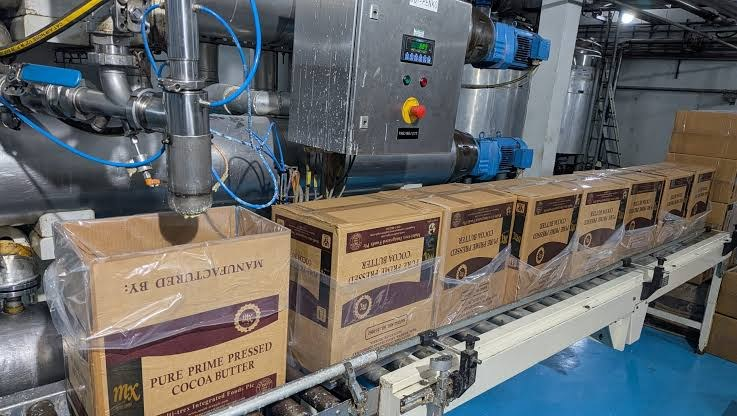

Multi-Trex pre-tax loss rises 79% to N1.03 billion in FY2026 despite revenue surge

Multi-Trex Integrated Foods Plc reported a pre-tax loss of N1.03 billion for the financial year ended April 30, 2026, up from N577.97 million a year earlier. Revenue rose 6,392% to N3.11 billion from N47.90 million, but the sharp increase did not translate into stronger profitability. The full-year revenue came from local sales of cocoa beans, compared with N38.42 million in export sales and N9.48 million in local sales in FY2025.
The company’s cost of sales climbed to N3.10 billion from N6.82 million, absorbing almost all of its revenue. Gross profit consequently fell 79.1% to N8.58 million from N41.08 million, and the gross profit margin dropped to 0.3% from 85.8%. Administrative expenses rose 28.3% to N1.17 billion, while other operating income declined to N198.13 million from N384.31 million.
Operating losses widened to N962.96 million from N485.96 million. Although interest expenses decreased to N70.60 million from N92.01 million, the reduction was not enough to prevent the pre-tax loss from increasing. Loss after tax reached N897.06 million, compared with N578.62 million in the previous year, despite a deferred tax credit of N136.50 million.
Total assets stood at N13.79 billion on April 30, down 4.5% from N14.44 billion a year earlier. Net cash from operating activities increased to N803.45 million from N475.64 million. However, capital expenditure on property, plant and equipment rose to N3.01 billion from N1.76 billion, contributing to a N2.48 billion net cash outflow from investing activities, compared with an inflow of N667.98 million in FY2025. Cash and cash equivalents declined by N1.75 billion during the year, against an increase of N114.72 million previously. The company’s shares last closed at N0.72 on November 18, 2026, and had gained 100% year to date from an opening price of N0.36.
Source: Nairametrics